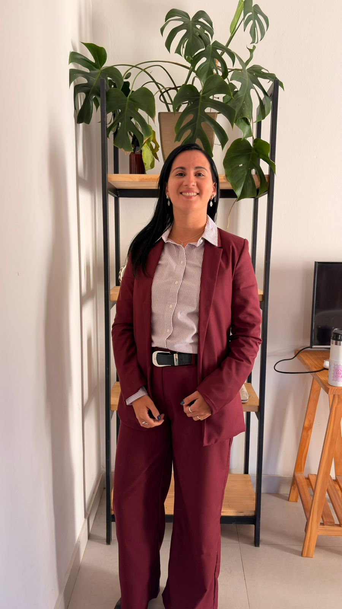

Cuota alimentaria
- Reclamos y actualización de cuotas
- Ejecución de cuotas impagas
- Determinación de ingresos
- Medidas contra deudores alimentarios
No trabajo solamente sobre expedientes. Te explico con claridad qué está pasando, cuáles son tus derechos y qué opciones reales tenés, sin tecnicismos, a tu lado en cada paso.

No fue solo una abogada, también fue una persona que estuvo presente.
Acompaño a personas y familias en momentos complejos de sus vidas. Mi objetivo es que entiendas qué está pasando y qué opciones reales tenés.
Cada caso tiene una historia detrás. No busco solamente resolver una cuestión jurídica: busco que tomes decisiones informadas, con tranquilidad y sintiéndote acompañada o acompañado durante todo el proceso.
Cada familia es distinta y no existen soluciones automáticas. Estas son las áreas en las que trabajo, siempre con un acompañamiento cercano.
Contame tu situación y vemos juntos cuál es el mejor camino.
Reservar una consultaEl objetivo no es solo resolver una cuestión jurídica, sino acompañarte durante todo el proceso, con sensibilidad y compromiso.
No uso jerga jurídica innecesaria. Te explico cada paso para que entiendas qué sucede y qué posibilidades existen.
Cada familia es distinta. No existen soluciones automáticas: pensamos juntos la mejor estrategia para tu caso.
Muchas gracias, Dra. Gracias a usted que me ayudó a ver a mi hijo. Aunque hoy las cosas son diferentes, tengo la conciencia tranquila: para mi hijo soy un papá amoroso y presente.
Gracias por la enorme mano. Es tan importante que alguien pueda darte confianza, te asesore y luche por lo de uno.
Gracias, Camila, por entender y por saber leer lo que está detrás de esos mensajes.
Agradezco muchísimo el tiempo y la dedicación que te tomaste. Se nota que entendés del tema; me gustaría avanzar con la consulta.
Muchas gracias por todo. Gracias por la confianza y la paciencia de siempre.
Gracias por todo, Camila. Quedé tranquila con cada paso del proceso.
Algunas dudas habituales. Si tenés otra, escribime y la resolvemos.
Sí. Cada situación familiar es distinta y requiere una evaluación personalizada. En la consulta analizamos tu caso y vemos qué opciones reales tenés.
Sí. Podés acercarte a una consulta presencial en Mar del Plata, con turno previo.
Sí. Atiendo consultas de forma virtual para que puedas resolver tu situación estés donde estés.
Depende de cada caso. Durante la consulta te indico exactamente qué documentación vas a necesitar para avanzar.
No. Muchos conflictos pueden resolverse mediante acuerdos, sin necesidad de llegar a un juicio.
Contame qué está pasando y vemos juntos el mejor camino para vos y tu familia.